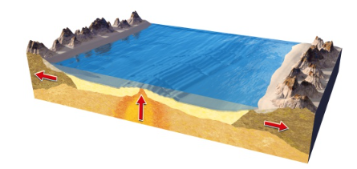
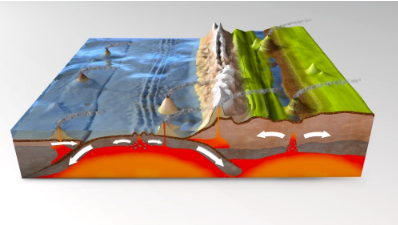

จุดประสงค์
อธิบายรูปแบบการเคลื่อนที่ของแผ่นธรณีที่สัมพันธ์กับการเกิดธรณีสัณฐานและโครงสร้างทางธรณี แบบต่าง ๆ
อธิบายรูปแบบการเคลื่อนที่ของแผ่นธรณีที่สัมพันธ์กับการเกิดธรณีสัณฐานและโครงสร้างทางธรณี แบบต่าง ๆ
การเคลื่อนที่ของแผ่นธรณี ทำให้เกิดการเปลี่ยนแปลงทางธรณีวิทยาต่างๆ ขึ้นตรงบริเวณแนวรอยต่อของแผ่นธรณีดังนี้ แผ่นธรณีเคลื่อนที่แยกออกจากกัน แผ่นธรณีเคลื่อนที่เข้ากัน แผ่นธรณีเคลื่อนที่เฉือนกัน เป็นต้น การเคลื่อนที่ของแผ่นธรณีในรูปแบบต่างๆ ส่งผลให้เกิดสถานที่สำคัญ หรือปรากฏการณ์ต่างๆ เช่น รอยเลื่อน เขตมุดตัว ร่องลึกก้นสมุทร หมู่เกาะรูปโค้ง แนวภูเขาไฟรูปโค้ง เป็นต้น
1. แผ่นธรณีเคลื่อนที่แยกออกจากกัน
การเคลื่อนที่แยกออกจากกันของแผ่นธรณี ทำให้เกิดสันเขาใต้สมุทร ส่งผลให้แผ่นธรณีแตกออกจากกันอย่างฉับพลัน เป็นสาเหตุทำให้เกิดแผ่นดินไหวขึ้น ตรงบริเวณแนวรอยต่อของแผ่นธรณี

2. แผ่นธรณีเคลื่อนที่เข้าหากัน
การเคลื่อนที่เข้าหากันของแผ่นธรณี ทำให้เกิดการเปลี่ยนแปลงทางธรณีวิทยาต่างๆ ตรงบริเวณแนวรอยต่อของแผ่นธรณี ดังนี้
- การเคลื่อนที่เข้าหากันของแผ่นธรณีมหาสมุทร เมื่อแผ่นธรณีมหาสมุทรจำนวน 2 แผ่น เคลื่อนที่เข้าหากัน แผ่นที่มีความหนาแน่นมากกว่า ส่วนใหญ่เป็นแผ่นที่มีอายุหินมากกว่า จะมุดตัวลงข้างใต้อีกแผ่นหนึ่ง บริเวณที่แผ่นธรณีมุดตัวลง เรียกว่า เขตมุดตัว บริเวณเขตมุดตัวจะเกิดเป็นร่องลึกก้นมหาสมุทร ส่วนปลายของแผ่นธรณีที่มุดตัวลง จะเคลื่อนที่จมลงสู่ฐานธรณีภาค ทำให้บางส่วนหลอมเหลวกลายเป็นแมกมา และจะปะทุแทรกขึ้นมาบนเปลือกโลกมหาสมุทร เกิดเป็นกลุ่มภูเขาไฟลูกเล็กๆ อยู่กลางมหาสมุทร มีลักษณะเรียงต่อกันเป็นรูปโค้งตามแนวร่องลึกก้นมหาสมุทร เรียกแนวภูเขาไฟดังกล่าวว่า หมู่เกาะรูปโค้ง
- การเคลื่อนที่เข้าหากันของแผ่นธรณีมหาสมุทร กับแผ่นธรณีทวีป เมื่อแผ่นธรณีมหาสมุทรกับแผ่นธรณีทวีปเคลื่อนที่เข้าหากัน แผ่นธรณีมหาสมุทรซึ่งมีความหนาแน่นมากกว่า จะมุดตัวลงข้างใต้แผ่นธรณีทวีป บางส่วนของแผ่นธรณีที่มุดตัวหลอมเหลวกลายเป็นแมกมา ปะทุแทรกขึ้นมาบนเปลือกโลกทวีป เกิดเป็นกลุ่มภูเขาไฟที่มีการวางตัวเป็นรูปโค้งอยู่เหนือเขตมุดตัว เรียกว่า แนวภูเขาไฟรูปโค้ง
- การเคลื่อนที่เข้าหากันของแผ่นธรณีทวีป เมื่อแผ่นธรณีทวีปเคลื่อนที่เข้าหากัน บางส่วนของแผ่นธรณีที่มีความหนาแน่นมากกว่า จะมุดตัวลงข้างใต้อีกแผ่นหนึ่ง และบางส่วนที่มีความหนาแน่นใกล้เคียงกัน จะเกิดการชนกันจนทำให้ชั้นหินบนเปลือกโลกทวีป เกิดเป็นรอยคดโค้งและเกิดเป็นเทือกเขาสูงใหญ่ ตรงบริเวณรอยต่อของแผ่นธรณี

3. แผ่นธรณีเคลื่อนที่เฉือนกัน
ในธรรมชาติ การเคลื่อนที่เฉือนกันของแผ่นธรณีส่วนใหญ่ เกิดร่วมกับการเคลื่อนที่แยกออกจากกัน และการเคลื่อนที่เข้าหากันของแผ่นธรณี เช่น รอยเลื่อนแซนแอนเดรียส (San Andreas Fault)
Licensed under the Creative Commons Attribution Share Alike License 4.0